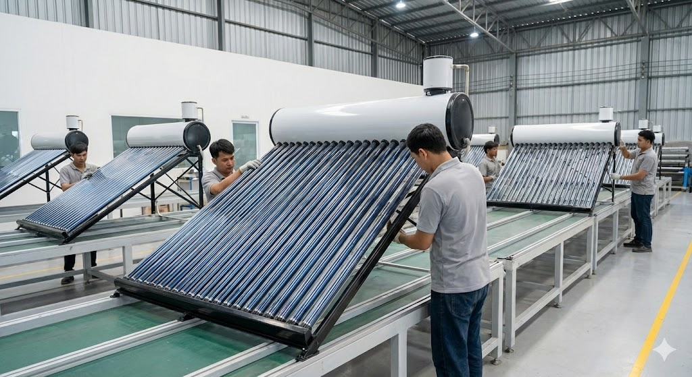
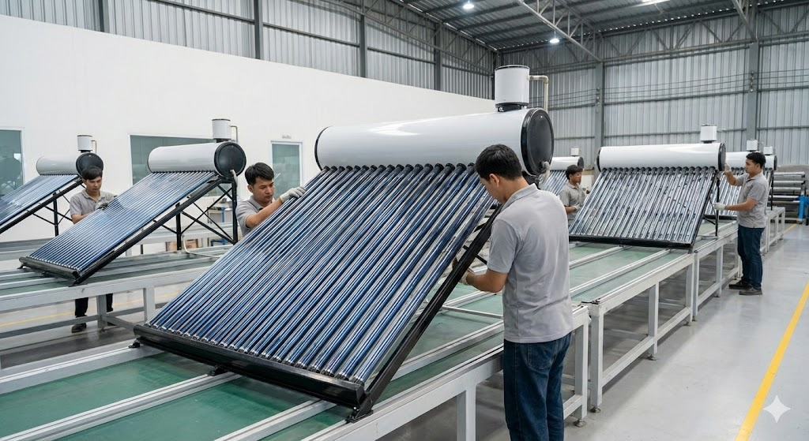

Transformación Digital Industrial & Desarrollo de Software
Especializado en la convergencia entre operación industrial y tecnología digital. Desarrollo soluciones que optimizan procesos, automatizan tareas y transforman datos en decisiones estratégicas para empresas manufactureras y de servicios.

Transformación Digital Industrial
Implementación de soluciones tecnológicas para optimizar procesos manufactureros y logísticos
Análisis de Datos & BI
Desarrollo de dashboards y reportes con Power BI para toma de decisiones basada en datos
Project Management
Gestión de proyectos complejos utilizando metodologías PMBOK, Agile, Scrum y Kanban
Desarrollo de Software
Creación de aplicaciones web, APIs y sistemas ERP con Python, JavaScript y bases de datos

 
